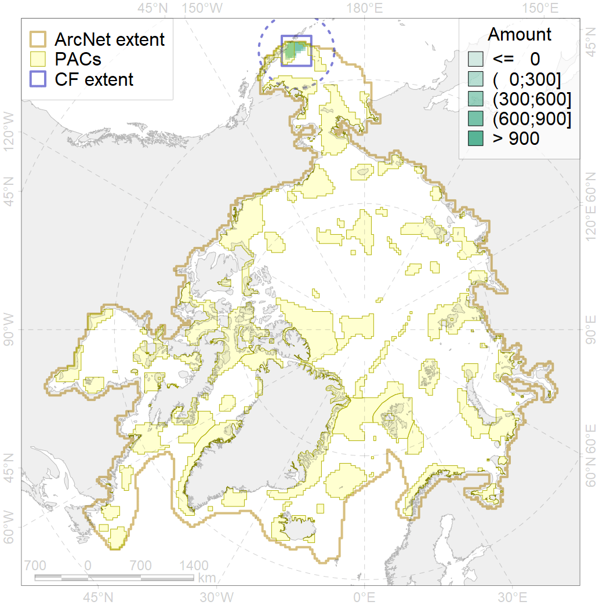

2056

| CF code | 2056 |
| CF name | Steller Sea Lion foraging areas |
| Time Period | 2018 |
| Source(s) | NOAA AFSC |
| Seasonality | January-December |
| Depth Horizon | 0-500m |
| Methodology | Defined based on the best available scientific data |
| Use Restrictions | Open source |
| Author Name | Irina Trukhanova |
| Notes | |
| Scenario’s Target | 0.576 |
| Target Achievement | 0.636 (Scenario: 110.5%) |
| PAC | Share of the Total Amount within the PAC | Share of the Target Achievement for the ArcNet | PAC’s Contribution to the Target Achievement |
|---|---|---|---|
| 1 | 52.8% | 90.9% | 82.2% |
| 2 | 10.1%12.4% | 16.1%16.8% | 14.6%15.2% |
| inner | 62.9%65.2% | 107.0%107.7% | 96.8%97.5% |
| outer | 37.1%47.2% | 3.5%19.6% | 3.2%17.8% |
| † supplement values are for area consistence whereas principal values are for Accenter compatible gridded stats |